Zengxiang Zhao
Machine Learning/Bioinformatics
SKILLS
- 7 yrs
- 4 yrs
- 4 yrs
- 4 yrs
- 7 yrs
- 7 yrs
- 2 yr
- 1 yr
- 3 yrs
- 1 yr
- 4 yrs
Summary
Full Stack Developer | Building Scalable HIPAA-compliant LIMS for NGS Genomics | Machine Learning| Python / React/ AWS
Developed and patented (Chinese Patent: 202011520839.X and 202011523286.3) a machine learning-based system for automated classification of HIV gene sequences, demonstrating the practical application of AI in genomics.
Cross-disciplinary Full Stack Developer leveraging dual expertise in Computer Science (MSc) and Biology (MSc) to engineer integrated software solutions for life sciences. Passionate about bridging biological research with robust full stack development to accelerate scientific workflows.
Certification: AWS Certified Cloud Practitioner
EDUCATION
-
M.S in Computer & Information Science
SUNY Polytechnic Institute, Utica, NY
- Major Areas: Software Engineering, Systems and Architectures, Algorithms and Theory, Artificial Intelligence and Modeling
- Cumulative GPA: 3.83/4.0
- Relevant Coursework: Machine Learning, OOP, Data Structures, Algorithms & Complexity, Computer Graphics
-
M.S in Pharmaceutical Engineering
Chinese Academy of Sciences, ShangHai, China
- Major Areas: Neuroscience, Pharmacology, Rat Surgery, Statistical Analysis
- Publication: Wang YJ, &Hang A, &Zhao ZX, et al.(2016) “kappa Opioid receptor activation in different brain regions differentially modulates anxiety-related behaviors in mice”. Neuropharmacology. 110: 92-101.
-
B.S in Bioengineering
Agriculture University of Hebei, Hebei, China
- Major Areas: Genetics, Microbiology, Cytology, Biochemistry, Fermentation
WORK EXPERIENCE
-
Molecular Bioinformatician Scientist/ Full Stack Engineer
siParadigm Diagnostic Informatics, NJ, US
Lead the full-stack development and implementation of multiple automation pipelines and internal systems, significantly enhancing operational efficiency, data integrity, and cost-effectiveness for clinical genomics operations. Core achievements includes:
- HIPAA-Compliant Clinical Reporting LIMS: Architected and developed a full-stack Laboratory Information Management System (LIMS) to manage case data and automate the generation of clinical reports from ThermoFisher and illumina output files. Containerized the entire application using Docker, ensuring consistent environments from development to production and simplifying deployments. The solution reduced report generation time by 83% (from 30 minutes to 5 minutes per report) compared to existing commercial software and has been used to produce over 10,000 clinical reports to data.
- TAT Monitoring System: Built an automated pipeline to track Turnaround Time(ATA) by aggregating and analyzing data from Excel, Google Sheets and Gmail. This tool cut analysis time by 90% (5 hours → 30 minutes per review cycle).
- Cloud Infrastructure & Cost Optimization: Administered a fleet of 10 servers. Implemented automated backup script to AWS S3. Strategically applied storage tiering policies to transition data to Glacier Archive, reducing long-term storage costs by an estimated 70%.
Technical Environment: Python(Flask) | React | MongoDB | Docker (Containerization, Docker Compose) | AWS (S3, Glacier) | JavaScript | REST APIs | Illumina Cloud Suite (BaseSpace, ICA, ICI, Dragen Server) | ThermoFisher (Genexus, Torrent Server)
-
Bioinformatician/ Machine Learning Engineer
National Human Genome Center, Beijing, China
Designed and implemented advanced machine learning and natural language processing pipelines to extract insights from complex biological and textual data. Key Projects included:
-
HIV Subtype Classification Engine: Developed a high-precision machine learning model for classifying HIV
gene sequences into 184 distinct subtypes. This model served as the core
algorithmic component for a patented bioinformatics solution (Chinese Patent:
202011520839.X and 202011523286.3), demonstrating
expertise in applying AI to complex genomic challenges.
[Skills Developed]: Pytorch, Machine Learning, Sklearn, Pandas, Jellyfish, Streamlit
-
HIV Subtype Classification Engine: Developed a high-precision machine learning model for classifying HIV
gene sequences into 184 distinct subtypes. This model served as the core
algorithmic component for a patented bioinformatics solution (Chinese Patent:
202011520839.X and 202011523286.3), demonstrating
expertise in applying AI to complex genomic challenges.
-
Full-Stack Knowledge Graph Platform: Architected and built an end-to-end knowledge graph construction pipeline.
Engineered the back-end data processing logic and deployed a responsive
front-end web interface using Flask and Jinjia2, enabling intuitive visualization
and exploration of entity relationships.
[Skills Developed]: Spacy, Transformers, nltk, Flask, D3.js, Bert Embedding，networkx，Stanford-openie
-
Advanced Text Summarization Systems: Built and compared two state-of-the-art automated summarization pipelines to
distill key information from large documents:
- Unsupervised Pipeline: Implemented an algorithm based on Maximum Marginal Relevance (MMR) for extractive summarization, effectively balancing information richness and content diversity.
- Deep Learning Pipeline: Fine-tuned Google's Pegasus model (a transformerbased model pre-trained for abstractive summarization) to generate fluent, human-like summaries, leveraging transfer learning for superior performance.
Advanced Technical Representative
JingYang Tonewall( Health Care Providers and Services), Beijing, China
Blended deep technical expertise in clinical laboratory quality control with commercial acumen to drive market growth and customer success. Served as the pivotal link between the customer's scientific needs and the company's commercial objectives.
- Mastered Bio-Rad's clinical software (Unity) and product portfolio, effectively communicating functionality to clients and contributing to a 20% increase in sales.
- Analyzed clinical laboratory data using specialized software, reducing quality control issues by 70% across client labs.
- Served as a consultant for a client seeking CAP certification, taking ownership of clinical data preparation and helping secure accreditation within two years.
SHOWCASE
-
Estimated Time Reduction per Case/Report
Workflow Previous Method Time LIMS Time Saved ThermoFisher case Golden Helix 20 min 3 min ⬇️ 17 min illumina liquid biopsy case Perian workflow (Perian + ICA) 60 min 15 min (LIMS + ICI) ⬇️ 45 min *Perian workflow includes: downloading source files via command line from ICA → uploading to Perian → modifying config files → reviewing case → generating PDF → converting to Word → manual reformatting - Automatically Extract Torrent Server Analysis Metrics via API
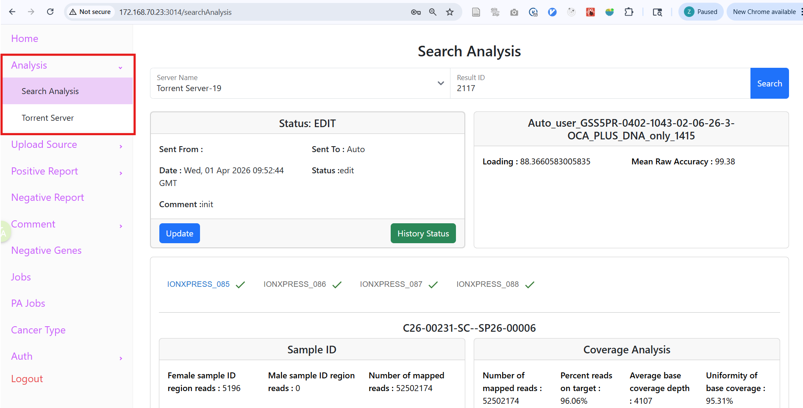
- Upload ThermoFisher source files
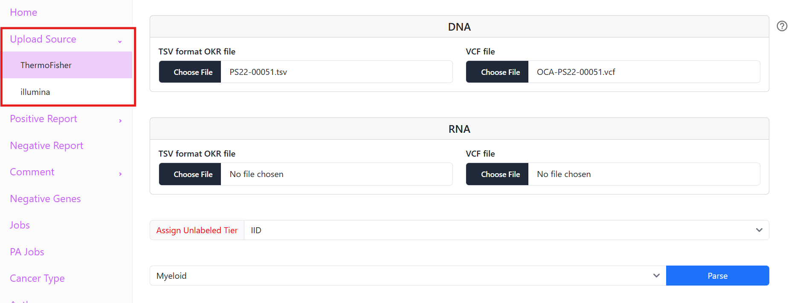
- Automatically Download Illumina Source Files via API
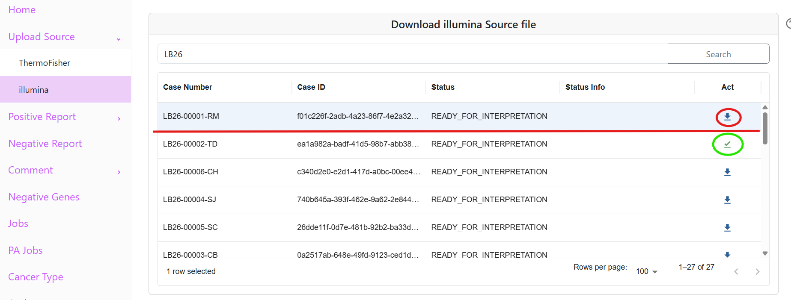
- Parse Source Files to Extract Case Information
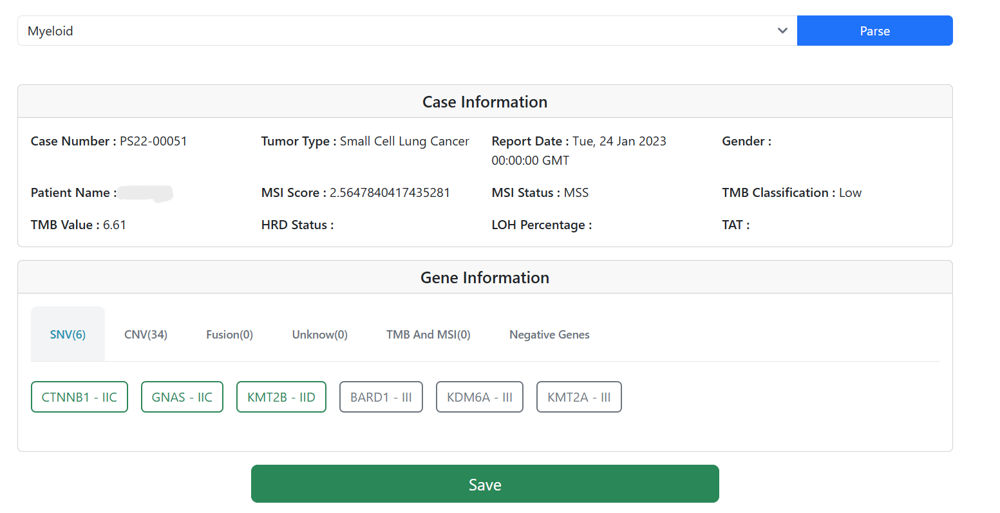
- Display case status history upon clicking the 'History Status' button.
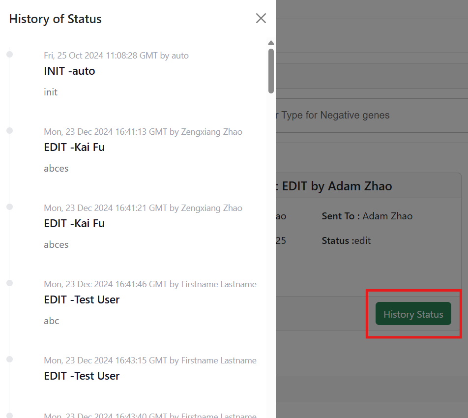
- You can modify the card fields by clicking the edit button at the bottom of the card.
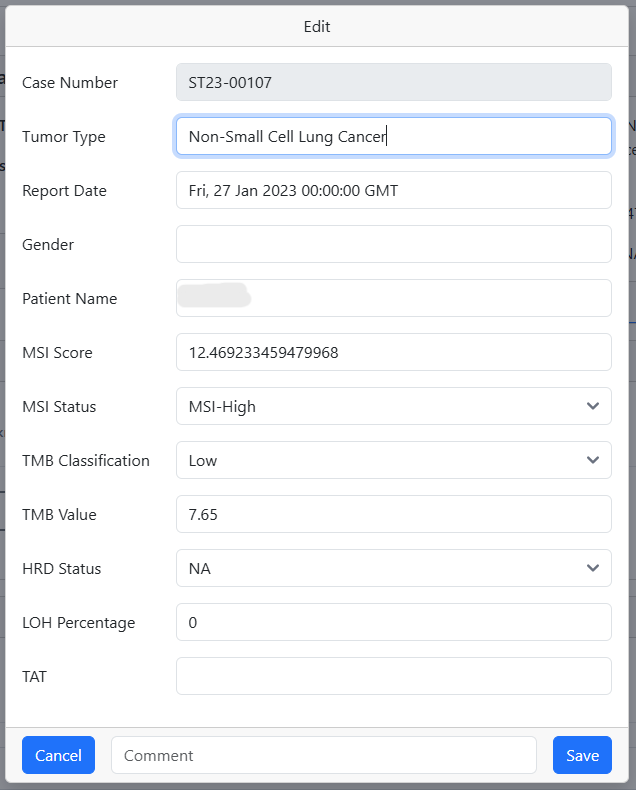
- When the card content is modified, a red flag appears in the top‑right corner of the card. You can view the modification history by clicking the red flag.
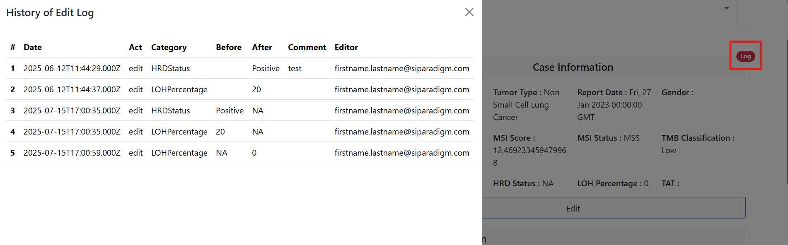
- After you finish editing, you can generate a Fully Customized Docx Format Report by following the steps below. Click the "Generate Report" button (shown as number 4) to create your report.
1. Choose a template name – Select from the available templates.
2. Select Negative Genes – Choose the relevant genes for your report.
3. Adjust template parameters – Customize the parameters based on your selected template.
4. Click "Generate Report" – Initiate report generation.
5. Save the report – Download and save the generated report to your desired location.
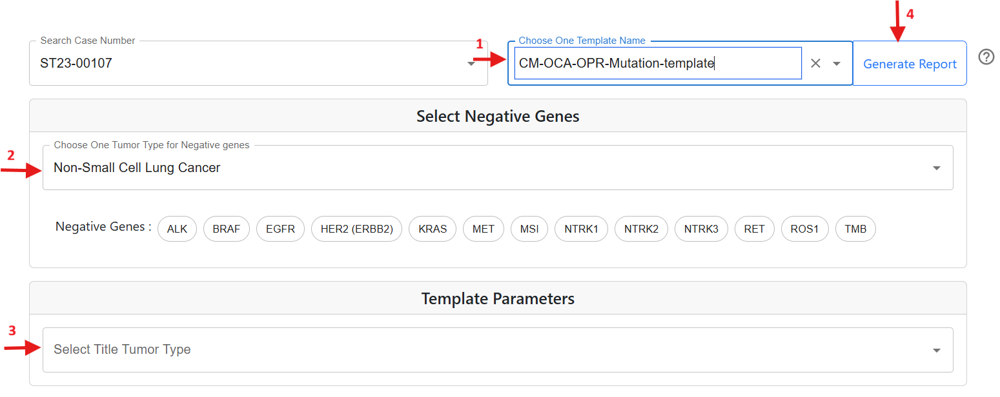
- Search database information – You can search across SV, CNV, Fusion, and Global Biomarkers.
1. Enter search criteria – Fill in at least one of the following fields: Tumor Type, Gene Name, Tier Level, cDot, or pDot.
2. Run the search – Click the Search button.
3. Review results – Check the details of any specific item in the search results.
4. View case details – Click the case number directly to access complete case information.
5. Export data – Click the EXPORT button to download the results as a CSV file.
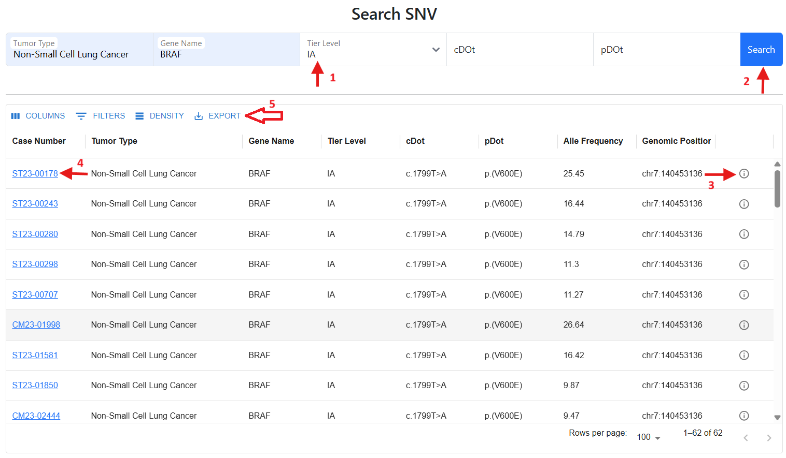
- View and edit the variant comment database.
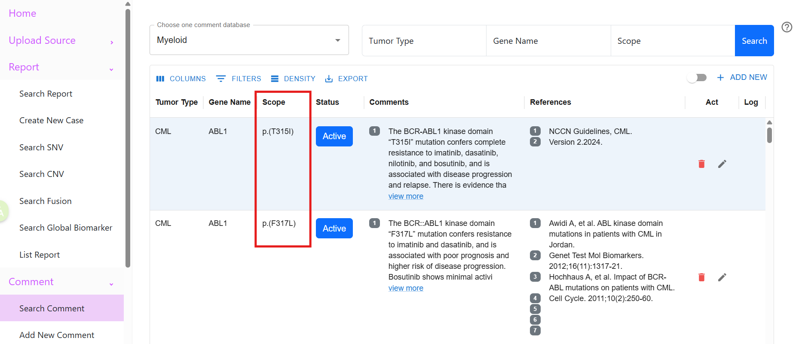
- Display cases grouped by status: Init, Edit, Final, and Other. You can quickly view how many cases are newly generated, currently being edited, or signed off.
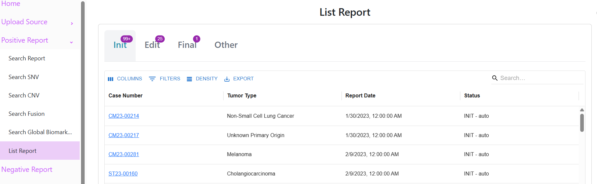
- Display a list of cases requiring user action. Simply click the case number to edit the case.
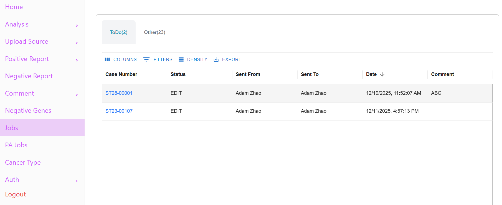
- HIV Classification Web Page
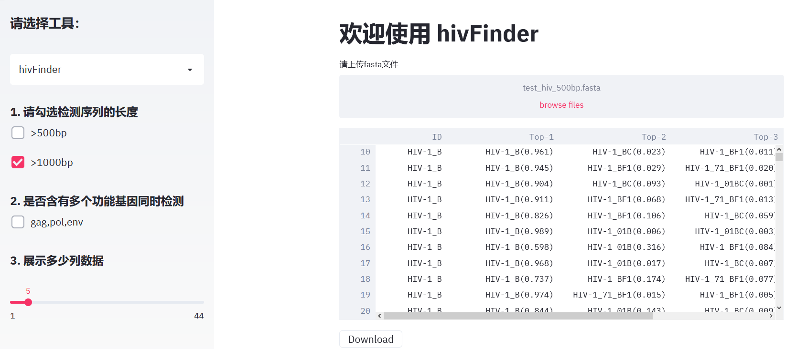
- Machine Learning Model Metrics for HIV Classification
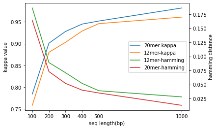
- Knowledge Graph Web Page
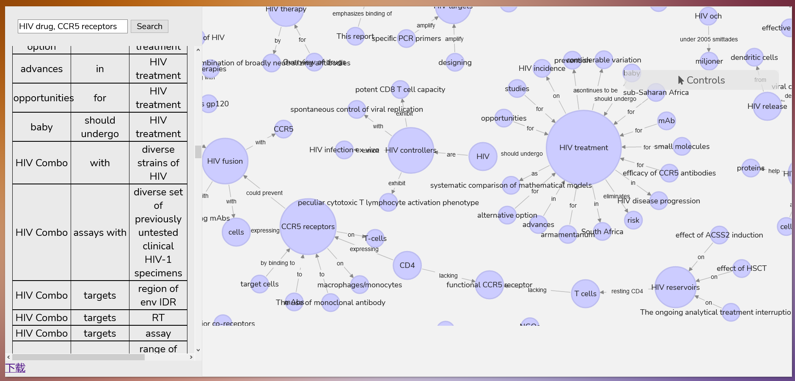